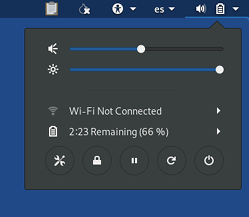

Cette version corrige plusieurs failles de sécurité et la mise à jour doit être faite dès que possible.
Changements
Nouvelles fonctionnalités
Vous pouvez maintenant verrouiller votre écran en cliquant sur le bouton dans le menu système.

Si vous définissez un mot de passe d'administration au démarrage de Tails, vous pouvez déverrouiller votre écran avec ce mot de passe.
Dans le cas contraire, vous pouvez définir un mot de passe pour déverrouiller votre écran lorsque vous le verrouillez pour la première fois.

Nous avons beaucoup amélioré l'infrastructure pour la persistance des logiciels additionnels. Vos logiciels supplémentaires sont maintenant :
- Installés en arrière-plan après le démarrage de la session plutôt que de bloquer l'ouverture du bureau.
- Sont toujours installés même si vous êtes hors ligne.
Installe pdf-redact-tools, un outil en ligne de commande pour nettoyer les méta-données et éditer des fichiers PDF en les convertissant en images PNG.
Un message d'erreur précisant le nom de la carte graphique est maintenant affiché quand Tails échoue à démarrer GNOME.
Mises à jour et changements
Le raccourci de la documentation de Tails sur le bureau ouvre maintenant la documentation sur notre site web si vous êtes en ligne.
Installe les pilotes pour Video Acceleration API qui améliore l'affichage vidéo sur de nombreuses cartes graphiques.
Mise à jour d'Electrum de la version 2.7.9 vers la version 3.0.6.
Mise à jour de Linux vers la version 4.15.0.
Mise à jour de Tor vers la version 0.3.2.10.
Mise à jour de Thunderbird vers la version 52.6.0.
Nous avons aussi activé le profil AppArmor de Thunderbird venant de Debian pour confiner Thunderbird pour la sécurité.
Réécriture de certains scripts internes écrits en scripts shell vers du Python, merci à GoodCrypto.
Problèmes corrigés
Suppression des messages de dépannage et d'erreurs lors du démarrage.

Correction de la sélection d'image ISO qui était indisponible dans l'Installeur Tails dans d'autres langues que l'anglais. (#15233)
Corrige l'applet OpenPGP qui ne répondait plus lors du déchiffrement d'une grand quantité de texte. (#6398)
Pour plus de détails, lisez notre liste des changements.
Problèmes connus
Vérification de Tails, notre extension de navigateur pour vérifier les téléchargements de Tails, est cassée dans Tails 3.6. Veuillez l'utiliser dans Firefox, Chrome ou le Navigateur Tor en dehors de Tails. (#15434)
Enigmail n'est pas capable de télécharger les clés OpenPGP pour de nouveaux contacts si vous avez l'option de persistance GnuPG activée. Vous pouvez encore télécharger les clés OpenPGP en utilisant Mots de passe et clés. (#15395)
Cette version n'est pas reproductible, à cause des nombreux fichiers python dans /usr/local qui ont des horodatages différents. (#15400)
Voir la liste des problèmes connus de longue date.
Obtenir Tails 3.6
- Pour l'installer, suivez nos instructions d'installation.
Nous ne fournissons pas de mise à jour automatique depuis les anciens Tails pour cette version, car nous avons corrigé un vieux problème en générant les fichiers nécessaires (#13426). Vous devez faire une mise à jour manuelle.
Si vous faites une mise à jour manuelle depuis Tails 3.2, 3.3, 3.4 ou 3.5, il est possible de sélectionner une image ISO seulement lorsque le Tails lancé est en anglais. Pour les autres langues, le bouton de sélection de fichier reste inactif :
Pour faire une mise à jour manuelle depuis Tails 3.2, 3.3, 3.4 ou 3.5, vous devez au choix :
Redémarrer Tails en anglais.
Démarrer l'Installeur de Tails en anglais depuis la ligne de commande :
LANG=en_US tails-installer
Et ensuite ?
Tails 3.7 est prévu pour le 8 mai.
Jetez un œil à notre feuille de route pour savoir ce que nous avons en tête.
Nous avons besoin de votre aide et il y a de nombreuses manières de contribuer à Tails (faire un don est seulement l'une d'entre elles). Venez discuter avec nous !